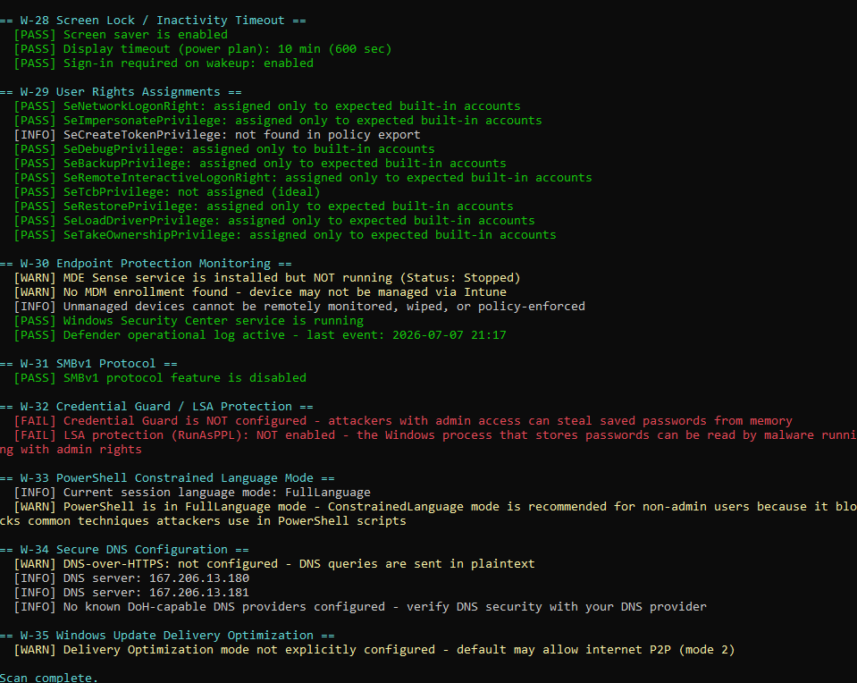
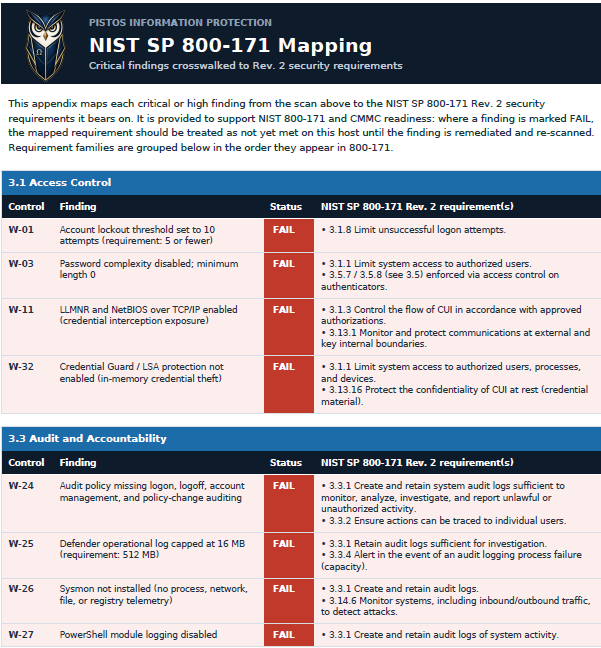
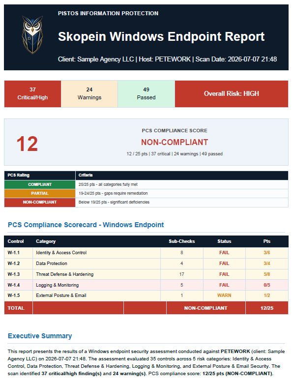

Skopein · σκοπεῖν · The Scanner Suite
Skopein is the Pistos technical scanner suite. It interrogates every surface your agency runs on, from Windows endpoints to your Microsoft 365 tenant to what an attacker sees from the internet, and turns each result into scored, defensible evidence. Not a dashboard that repeats what your vendors already told you. A direct look at the ground truth.
Six scan surfaces today. A dedicated web application scanner joins the suite next, completing coverage from the endpoint to the public edge.
Silent by design
Skopein scans run headless on Windows workstations and Linux, with no interface for a user to notice, misuse, or click through. There is nothing to install a habit around and nothing to train staff on. The operator schedules the scan; the environment reports the truth, check by check; the results roll up into a scored report.

One-to-one linkage
A vulnerability list that stops at "critical / high / medium" leaves you to argue relevance with an examiner. Skopein doesn't. Each finding is tied to the specific control it proves, and every scan report can carry an appendix that crosswalks its critical findings to NY DFS 23 NYCRR 500, NIST SP 800-171, and the other frameworks you answer to, so a scan result arrives as an audit answer.

Scored output
Every scan produces a branded report with a compliance score, a pass/warn/fail scorecard by control category, and an executive summary an owner can actually read. The same output imports straight into Pistos Compliance Sentinel, aligned to the identical control families, so inherent risk ratings are backed by scan data and quarterly reviews measure controls against what was observed. Skopein is the interrogation; Sentinel is the record.

Materiality First
Skopein finds every misconfiguration, on the server holding the lunch menu and the one holding client records alike. What Pistos adds is judgment: the same finding is a footnote on one and a breach obligation on the other. We prioritize by the data at stake and the regulation attached to it, not by CVSS score alone.
Request a walkthrough and we will scope Skopein to your stack: endpoint count, cloud footprint, public-facing assets, and the frameworks that will consume its findings.
Request a walkthrough